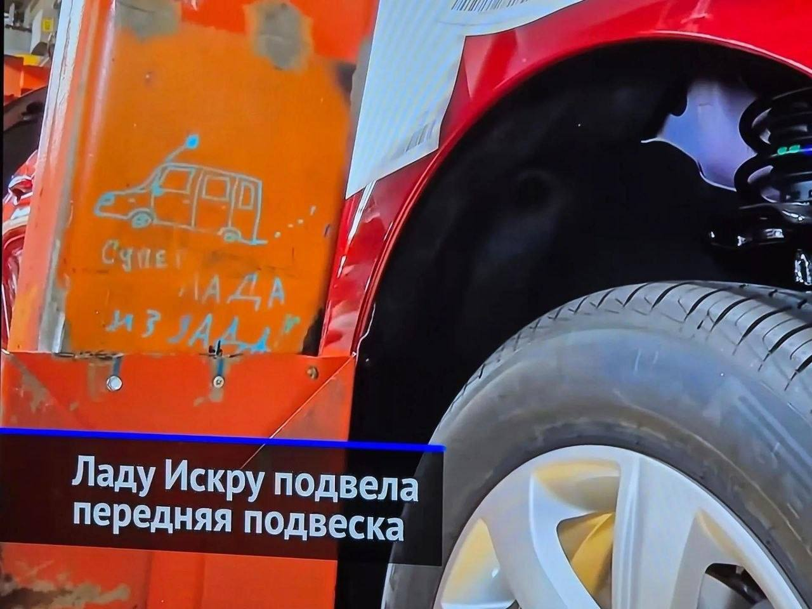

Тачки и Точка
@tachki
Тачки и Точка
@tachki
Лада из ЗАДА в репортаж о Lada Iskra попала вот такая неожиданная надпись на заводском оборудовании.

«Лада из ЗАДА»: в репортаж о Lada Iskra попала вот такая неожиданная надпись на заводском оборудовании.
Её заметили на фоне новости об отзыве почти 3000 машин из-за дефекта передней подвески.
Ну, хотя бы с самоиронией у них всё в порядке.
🚙 Тачки и Точка
Её заметили на фоне новости об отзыве почти 3000 машин из-за дефекта передней подвески.
Ну, хотя бы с самоиронией у них всё в порядке.
🚙 Тачки и Точка